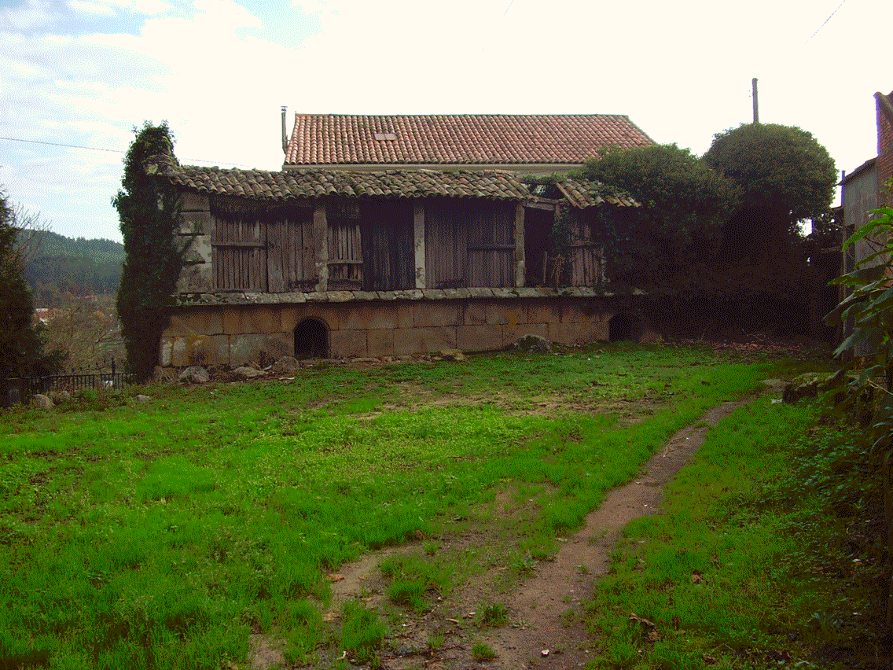

A palabra procede do latín CASTRUM, ‘lugar fortificado, campamento’. Castro ponlle nome a unha das entidades de poboación da parroquia de San Xoán de Laíño formada a carón dun poboado castrexo que houbo nas proximidades. Aldea recollida, de fiestras abertas ó nacente, cara o vento soán, con estreitas ruelas, calexas enlatadas e querenza polas casas de paredes redondas que as contornan, quizais porque os que as ergueron tiñan en mentes as vivendas circulares dos seus poboadores primixenios. As edificacións máis antigas dunha planta e tellado cunha única vertente case non teñen ocos nin cheminea porque o fume das lareiras saía polas tellas. Hai casas con mostras de cantería de calidade en hórreos, potiños e escaleiras e un fermoso reloxio de sol cúbico na Casa da Bexa (1859) traballado polas catro caras. O informe de Patrimonio que anota algunhas das consideracións que comentamos califica o conxunto “de características singulares”. Desde Castro enxérgase sen dúbida a mellor vista do esteiro do Ulla, barandal sobre o noso mundo de auga. Subide para ver como muda de cor a pel livián da braña co devalar das horas.
Castrelo e castelo formáronse desde CASTELLUM e son diminutivos de castro, CASTRUM, ‘fortificación, campamento’. Están tamén moi representados na toponimia. Cada vez os arqueólogos fan retroceder máis o inicio da cultura dos castros, quizais a finais do segundo milenio antes de Cristo. Correspóndense fundamentalmente coa Idade de Ferro e foron o tipo de asentamento que atoparon os romanos cando chegaron aquí coas súas lexións. Son case sempre poboados fortificados situados a media lacada vez dubidase máis de que as murallas e foxos tiveran unha función simplemente defensiva. As vivendas eran de planta circular e estarían cubertas de colmo. Espallados por toda a xeografía galaica, no Nomenclátor da Xunta de Galicia levan o nome de Castro 283 lugares e 73 parroquias, pero habería que engadir os miles deles que forman parte da microtoponimia e os seus derivados: Castrelo, Castriño… No noso concello están catalogados os seguintes: Os Castros de Bexo, o de Castro, o de Lestrobe, o de Traxeito e o do monte Sián. Algúns foron estudados nun artigo de Puente Míguez e Ruibal del Castillo da revista Gallaecia e incluídos en estudios máis xerais coma os de Xerardo Agrafoxo, agás o de Lestrobe e o do Sián. Case todos están referenciados na toponimia.
O Castro de Bexo, o máis pequeno, ten nas súas ladeiras O Agro Grande do Castro e O Agro Pequeno do Castro. A maior parte del está no Concello de Rianxo. Ó castro grande os veciños chámanlle As Murallas, As Murallas dos Castros de Bexo ou O Castelo. Ten forma alongada e conserva efectivamente parte dos seus cinturóns pétreos de murallas circundando unha gran terraza. Nas súas croas distínguense restos de vivendas hoxe inzadas de eucaliptos. Cara a zona sur e leste a ladeira descende abruptamente mentres que no norte a pendente é suave con tres aterrazamentos escalonados. Atopáronse nel abundantes restos cerámicos (Dirección Xeral do Patrimonio).
Os veciños lembran unha calzada empedrada que baixaba en dirección a Teaio. Ten unha visión panorámica de todo o val: Vense desde o píncaro o Barbanza, a Muralla, o Castro Barbudo, o Meda, o Castro Valente, o Xiabre, Lobeira, o monte das Cercas ou do Castro, a Lioira Os máis deles foron tamén poboados … castrexos. Sacouse moita pedra de gran dureza para casas, muros e peiráns e aínda se poden ver as marcas do traballo dos canteiros nas abas apenedadas. Unha das laxes graníticas na que se di que rezaba o Apóstolo chá- mase A Cama dos Mouros e realizáronse nela rituais de fecundidade. Hai lendas de tradición oral que falan do castro e das mámoas do fondo do val, historias de mouros e doncelas encantadas, de covas e pergameos que sinalan tesouros ocultos e vigas de ouro que se repiten case sen variación por toda a xeografía galega. Contar, contan, que é lugar encantado, e que viñeron frades do convento de Herbón a romper o maleficio e deixando un fato de saramagos na entrada dunha espenuca viuse sair o demo en forma de raposo. A Eira dos Mouros, onde estaban estes enterrados, dise que non daba toxo porque o sangue dos infieis non o deixaba medrar. Outra tradición trata do saqueo destas paraxes polo mouro Almanzor e dun pasadizo soterrado ou dunha cadea que iría desde aquí ata as Torres de Oeste para impedirlles o paso ás hostes sarracenas. Moita cadea sería Estas e outras historias recolleunas a Asociación de veciños de … San Xoán de Laíño no ano 1993 facendo un rigoroso inventario etnográ- fico da parroquia.
O Castro, no camiño que vai de Imo a Castro, está moi deteriorado, afectado pola roturación secular das leiras de cultivo e polo desmonte que se fixo en tempos recentes para edificar unha casa. O núcleo de poboación da aldea de Castro formouse na parte norte do asentamento e ten unha vista privilexiada de todo o val. Do lado de riba da aldea antes estaba O Portelo do Castro. Consérvanse uns outeiros ós que lle chaman Os Outeiros do Castro, nos que está A Croa da Raíña Moura ( Llinares, Mar: Mouros, ánimas…) onde estaría sepultada. Quedan os dous topó- nimos na Carballeira do Castro, e do lado de riba dela, O Castriño. Os veciños chámanlle O Castro a toda a extensión que vai desde a aldea ata este lugar, na que hai unha manchea de microtopónimos. As Brañeiras do Castro son un deles. O Agro de Castro e O Souto de Castro tamén son desa aldea. Hai así mesmo lendas de códices (o Libro de San Cibrán) e de encantamentos (a señora das tesoiras que vende cousas bonitas), e unha vella tradición popular fala dun longuísimo túnel de varios kilómetros, feito polos mouros, que chegaría deica os castros de Bexo. En realidade, a mina de Moure, foi un manancial de auga. Hai varios pasadizos destes na comarca coma o que ía desde a Rocha Blanca ata Iria, desde A Lioira a Rianxo ou desde o Castelo da Lúa de Paio Gómez Chariño por debaixo do mar ata O Neixón; do que se conclúe que os mouros tiñan unha afección enfermiza pola espeleoloxía e moitísimo tempo libre.
O Castro de Lestrobe está do lado de riba da aldea na ladeira do Monte do Castro e hai un Camiño do Castro que leva a el.
Murguía durante as súas estadías no Pazo dos Hermida, observou que nas riadas baixaban fragmentos de tégulas, ladrillos romanos, restos de condución de cerámica moi fina e doutros materiais, polo que supoñía a existencia un antigo poboado semellante ó Rath de Loegaire, en Irlanda.A Laxe do Castro, tiña (e terá) unha fenda que arremedaba unha porta. Volvemos toparnos máis outra vez cunha señoriña que ás veces vixiaba a entrada. Os veciños da aldea coidábanse ben de non pasar a certas horas polos arredores.
O lugar onde se asenta O Castro de Traxeito chámase O Castro, a parte máis alta é O Coto do Castro e a baixada O Rechán do Castro. Está na aba do monte Meismadela e culmina o val onde nace o río que será despois de Vigo ou de San Lufo, pero nas aldeas de riba aínda non ten nome de seu. Vénselle de lonxe as feituras nos socalcos que descen a caeira. Ten unha croa redondeada rodeada por diferentes terrazas que se viron afectadas polas leiras de cultivo e pola estrada que vai a Rois por Formariz e atópanse nel cerámicas e tégulas.
Castrofeixe (outros topónimos co final en “feixe” para Joaquín Caridad teñen que ver coa divindade celta Esus) está arriba do Bustelo de Traxeito. Ignoramos cal sexa o significado do segundo elemento da palabra. Feixe (feixó) recóllea Sarmiento como sinónimo de faba. Se fose Castrofeito, procedería de fracto, ‘desfeito’, a partir dun castro freito primitivo. Pousocovo dos Castros está no monte de Pexegueiro e Castrelo na Devesa. O Casteliño está no monte de Teaio. Na veiga de Lestrobe hai unhas leiras á beira do vello Sar que se chaman Castelo Vello. Son varios os historiadores que pensan que Lestrobe foi unha villae romana, á beira da gran civitas de Iria que ocupaba máis de vinte hectáreas de terreo, entre Iria e Porto, a aldea de Cesures. (Pérez Losada: “Entre a cidade e a aldea, estudio arqueohistórico dos aglomerados secundarios romanos en Galicia”). O autor citado explícanos que Estrabón e Tito Livio entre os tipos de hábitat romanos mencionan oppida, vici e castella. Fortificado ou non, o castellum era un núcleo de poboación dependente dunha cidade romana pero con entidade propia (Pereira Menaut: “Los castella y las comunidades de Gallaecia”). Talvez este Castelo Vello da veiga de Lestrobe dá conta de antigas edificacións, rueiros, arrabaldos do que foi o Foro Iriensis, aínda que poderían ser desaparecidas construcións altomedievais. Nun dos curutos do monte Fontecova, na Catalogación do Patrimonio Arqueolóxico do Concello, figura o Castelo do Monte Vilar. Os veciños chámanlle Os Mosqueiros. Consultada a ficha correspondente na Dirección Xeral do Patrimonio, consta que se atoparon fragmentos dunha vasilla medieval de factura manual. Valórase a posibilidade dunha fortificación desa época. Subimos, e do lado de riba dos petoutos, entre os que hai unha curiosa rocha cunha oquedade abovedada, puidemos observar restos de Construcións circulares. Divisamos desde o cume as vellas terras de Dodro e de Laíño, sepultas naquela hora baixo arpilleiras de bris, as valiñas mainas das aldeas de riba, a bichoca lacustre do Ulla, nubeiros esporriñados polo Mar da Arousa …
